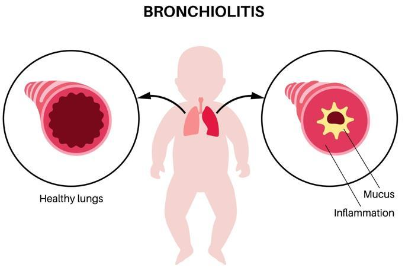

Bronchiolitis is a common respiratory infection that affects the tiny airways in the lungs, called bronchioles. These small tubes carry air to the lung's air sacs, where oxygen enters the bloodstream. If the bronchioles become swollen and irritated, it can be hard to breathe.
This condition mostly affects babies and children under 2 years old. Most cases improve within 1 to 2 weeks.

Viral infections: The most common cause is respiratory syncytial virus, or RSV. Other viruses can also trigger it.
Young age: Infants and toddlers are more likely to get bronchiolitis because their airways are smaller.
Exposure to illness: Close contact with children who are sick raises the risk of infection.
Bronchiolitis often starts with mild symptoms, such as a runny nose, a mild cough, or a fever. After a few days, symptoms may include:
Coughing: Your child may have a dry cough that gets worse.
Wheezing: This is whistling sound when breathing out.
Trouble breathing: You may notice faster or labored breathing. You may see the chest moves more than usual.
Fever: This is often mild.
Fatigue: Your child may seem more tired than usual.
Trouble feeding: They may eat or drink less.
Examine your child: They may listen to their breathing and check their chest for movement or sounds.
Ask about symptoms: Share details about how long your child has been sick and any changes in behavior or symptoms.
Do tests: Most cases do not require tests. Your team may do a chest X-ray or nasal swab if the symptoms are severe or unusual.
Provide immediate care: The care team might suction mucus to clear airways, give fluids through an IV, or give oxygen and breathing treatments.
Give medicine: Use over-the-counter medicines for fever and pain. This includes acetaminophen, like Tylenol®, and ibuprofen, like Advil®, based on your child’s weight. Do not use ibuprofen for babies under 6 months of age. Never give aspirin, as it can cause Reye’s syndrome.
Use a nebulizer: If wheezing or mucus is severe, your care team may give your child nebulizer treatments to ease breathing. A nebulizer turns liquid medicine into a mist for inhalation. Antibiotics, cough suppressants, and decongestants are not recommended for bronchiolitis.
Hydrate: If your child is under 1 year old, offer breastmilk or formula as often as they will drink it. Use oral rehydration solutions like Pedialyte® for babies over 6 months. Use a dropper for small sips every 10 to 15 minutes if needed. For children 1 year and older, give water, clear broths, oral rehydration solutions, or ice pops. Avoid sugary or caffeinated drinks.
Rest: Encourage plenty of rest to help recovery.
Use a humidifier: A cool-mist humidifier can ease breathing. Clean it daily to prevent mold.
Use steam therapy: Sitting in a steamy bathroom for 10 minutes can help loosen mucus.
Clean their nose: Saline drops and gentle suctioning with a bulb syringe or nasal aspirator can help keep the nose clear.
Monitor sleep position: Babies under 24 months should sleep flat on their back on a firm surface. For children over 24 months, lightly raise the head of the bed to help with breathing.
Avoid smoke: Do not let anyone smoke around them or in your house. It makes it harder for them to breathe and delays healing.
Wash hands frequently: Teach your child to wash hands for at least 20 seconds with soap and water.
Stay away from sick people: Keep your child away from people who are ill, especially during cold and flu season.
Clean shared items: Regularly sanitize toys, utensils, and surfaces your child uses.
Stay current on vaccines: Ensure your child receives recommended vaccines, including those for influenza, RSV, and COVID-19.
To check breathing, look at the chest or belly rise and fall. Count the number of breaths in 30 seconds. Double this number to find breaths per minute.
If your child’s breathing rate exceeds the following, contact your care team:
Under 1 year: 60 breaths per minute
1 to 3 years: 40 breaths per minute
3 to 6 years: 34 breaths per minute
6 to 12 years: 30 breaths per minute
12 years and over: 25 breaths per minute
Call if your child:
Has worsening symptoms or no improvement after a few days
Has a fever over 100.4°F or 38°C
Is not eating or has fewer wet diapers
Is breathing faster than usual or with a musical sound
Get help right away if your child:
Struggles to breathe or has bluish lips
Has pauses in breathing, called apnea
Is very sleepy or difficult to wake up
Shows signs of dehydration, such as no urine for 8 hours
Thank you for trusting us with your child’s care. We are here to support you and want you and your child to feel your best. Contact us with any questions.
IF YOU HAVE A MEDICAL EMERGENCY, CALL 911 OR GO TO THE EMERGENCY ROOM.
The information presented is intended for general information and educational purposes. It is not intended to replace the advice of your health care provider. Contact your health care provider if you believe you have a health problem.
Last updated January 2025
© 2025 Mytonomy, Inc. All rights reserved.